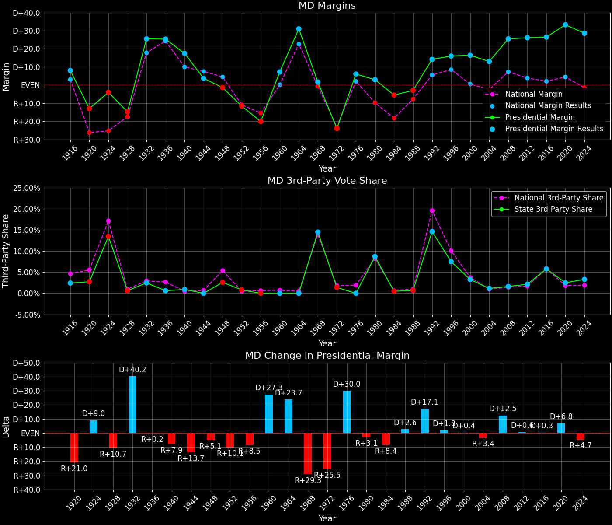

Maryland (MD) — Statewide

Margins · 3rd-Party share · Pres. deltas

Relative margins · Relative 3rd-Party · Rel. deltas
Maryland (MD) — Total Data
| Year | EVs | D | R | State Margin | Nat. Margin | Rel. Margin | Total votes |
|---|---|---|---|---|---|---|---|
| 1968 | 10 | 533,583(43.6%) | 512,367(41.9%) | D+1.7 | R+0.6 | D+2.3 | 1,223,900 |
| 1972 | 10 | 505,781(37.9%) | 829,305(62.1%) | R+24.2(Δ R+26.0) | R+23.5(Δ R+23.0) | R+0.7(Δ R+3.0) | 1,335,086 |
| 1976 | 10 | 759,608(53.0%) | 672,661(47.0%) | D+6.1(Δ D+30.3) | D+2.2(Δ D+25.7) | D+3.9(Δ D+4.6) | 1,432,269 |
| 1980 | 10 | 726,161(47.1%) | 680,606(44.2%) | D+3.0(Δ R+3.1) | R+9.9(Δ R+12.1) | D+12.9(Δ D+9.0) | 1,540,496 |
| 1984 | 10 | 787,935(47.0%) | 879,918(52.5%) | R+5.5(Δ R+8.4) | R+18.1(Δ R+8.2) | D+12.6(Δ R+0.2) | 1,675,873 |
| 1988 | 10 | 826,304(48.2%) | 876,167(51.1%) | R+2.9(Δ D+2.6) | R+7.7(Δ D+10.4) | D+4.8(Δ R+7.8) | 1,714,358 |
| 1992 | 10 | 988,571(49.8%) | 707,094(35.6%) | D+14.2(Δ D+17.1) | D+5.6(Δ D+13.3) | D+8.6(Δ D+3.8) | 1,984,653 |
| 1996 | 10 | 966,208(54.8%) | 681,530(38.6%) | D+16.1(Δ D+2.0) | D+8.6(Δ D+3.0) | D+7.6(Δ R+1.0) | 1,763,550 |
| 2000 | 10 | 1,144,008(56.6%) | 813,827(40.2%) | D+16.3(Δ D+0.2) | D+0.5(Δ R+8.0) | D+15.8(Δ D+8.2) | 2,022,194 |
| 2004 | 10 | 1,334,487(56.0%) | 1,024,693(43.0%) | D+13.0(Δ R+3.3) | R+2.5(Δ R+3.0) | D+15.5(Δ R+0.4) | 2,384,180 |
| 2008 | 10 | 1,629,467(61.9%) | 959,862(36.5%) | D+25.4(Δ D+12.5) | D+7.3(Δ D+9.7) | D+18.2(Δ D+2.7) | 2,631,596 |
| 2012 | 10 | 1,677,844(62.2%) | 971,869(36.0%) | D+26.2(Δ D+0.7) | D+3.9(Δ R+3.4) | D+22.3(Δ D+4.1) | 2,697,018 |
| 2016 | 10 | 1,677,928(61.3%) | 943,169(34.5%) | D+26.8(Δ D+0.7) | D+2.1(Δ R+1.8) | D+24.7(Δ D+2.4) | 2,736,649 |
| 2020 | 10 | 1,985,023(65.4%) | 976,414(32.2%) | D+33.2(Δ D+6.4) | D+4.4(Δ D+2.3) | D+28.8(Δ D+4.0) | 3,037,031 |
| 2024 | 10 | 1,902,577(62.6%) | 1,035,550(34.1%) | D+28.5(Δ R+4.7) | R+1.5(Δ R+6.0) | D+30.1(Δ D+1.3) | 3,038,334 |
Column explanations
- Δ
- Change (delta) in the value from the previous election year.
- Year
- Election year.
- EVs
- Number of electoral votes allocated to this state or unit.
- D
- Number of votes for the Democratic candidate (raw count(pct%)).
- R
- Number of votes for the Republican candidate (raw count(pct%)).
- State Margin
- Margin between the two major-party candidates, including third-party votes ((D - R)/total).
- Nat. Margin
- The national presidential margin for that year, including third-party votes ((D_total - R_total)/total_votes).
- Rel. Margin
- The presidential margin relative to the national presidential margin (Margin - Nat. Margin).
- Total votes
- Total voter turnout or ballots cast (when provided).
Maryland (MD) — Third-Party Data
| Year | D | R | Other votes | State 3rd-Party Share | 3rd-Party Nat. Share | 3rd-Party Rel. Share |
|---|---|---|---|---|---|---|
| 1968 | 533,583(43.6%) | 512,367(41.9%) | 177,950(14.5%) | 14.54% | 13.59% | 0.95% |
| 1972 | 505,781(37.9%) | 829,305(62.1%) | 0(0.0%) | 0.00% | 0.09% | -0.09% |
| 1976 | 759,608(53.0%) | 672,661(47.0%) | 0(0.0%) | 0.00% | 0.33% | -0.33% |
| 1980 | 726,161(47.1%) | 680,606(44.2%) | 133,729(8.7%) | 8.68% | 6.98% | 1.71% |
| 1984 | 787,935(47.0%) | 879,918(52.5%) | 8,020(0.5%) | 0.48% | 0.12% | 0.36% |
| 1988 | 826,304(48.2%) | 876,167(51.1%) | 11,887(0.7%) | 0.69% | 0.21% | 0.48% |
| 1992 | 988,571(49.8%) | 707,094(35.6%) | 288,988(14.6%) | 14.56% | 19.23% | -4.67% |
| 1996 | 966,208(54.8%) | 681,530(38.6%) | 115,812(6.6%) | 6.57% | 9.68% | -3.11% |
| 2000 | 1,144,008(56.6%) | 813,827(40.2%) | 64,359(3.2%) | 3.18% | 3.65% | -0.47% |
| 2004 | 1,334,487(56.0%) | 1,024,693(43.0%) | 25,000(1.0%) | 1.05% | 0.84% | 0.21% |
| 2008 | 1,629,467(61.9%) | 959,862(36.5%) | 42,267(1.6%) | 1.61% | 1.38% | 0.23% |
| 2012 | 1,677,844(62.2%) | 971,869(36.0%) | 47,305(1.8%) | 1.75% | 1.62% | 0.13% |
| 2016 | 1,677,928(61.3%) | 943,169(34.5%) | 115,552(4.2%) | 4.22% | 5.54% | -1.31% |
| 2020 | 1,985,023(65.4%) | 976,414(32.2%) | 75,594(2.5%) | 2.49% | 1.84% | 0.65% |
| 2024 | 1,902,577(62.6%) | 1,035,550(34.1%) | 100,207(3.3%) | 3.30% | 1.88% | 1.42% |
Column explanations
- Year
- Election year.
- D
- Number of votes for the Democratic candidate (raw count(pct%)).
- R
- Number of votes for the Republican candidate (raw count(pct%)).
- Other votes
- Number of votes for third-party (other) candidates (raw count(pct%)).
- State 3rd-Party Share
- Share of the vote received by third-party (other) candidates.
- 3rd-Party Nat. Share
- The national third-party share for that year (3rd-Party votes / total votes).
- 3rd-Party Rel. Share
- Third-party share relative to the national third-party share (3rd-Party share - Nat. 3rd-Party share).

Two-party margins · relative · deltas
Maryland (MD) — Two-Party Data
| Year | EVs | D | R | 2-Party Margin | 2-Party Nat. Margin | 2-Party Rel. Margin |
|---|---|---|---|---|---|---|
| 1968 | 10 | 533,583(51.0%) | 512,367(49.0%) | D+2.0 | R+0.7 | D+2.7 |
| 1972 | 10 | 505,781(37.9%) | 829,305(62.1%) | R+24.2(Δ R+26.3) | R+23.6(Δ R+22.9) | R+0.7(Δ R+3.4) |
| 1976 | 10 | 759,608(53.0%) | 672,661(47.0%) | D+6.1(Δ D+30.3) | D+2.2(Δ D+25.8) | D+3.9(Δ D+4.5) |
| 1980 | 10 | 726,161(51.6%) | 680,606(48.4%) | D+3.2(Δ R+2.8) | R+10.6(Δ R+12.8) | D+13.9(Δ D+10.0) |
| 1984 | 10 | 787,935(47.2%) | 879,918(52.8%) | R+5.5(Δ R+8.8) | R+18.1(Δ R+7.5) | D+12.6(Δ R+1.3) |
| 1988 | 10 | 826,304(48.5%) | 876,167(51.5%) | R+2.9(Δ D+2.6) | R+7.8(Δ D+10.4) | D+4.8(Δ R+7.8) |
| 1992 | 10 | 988,571(58.3%) | 707,094(41.7%) | D+16.6(Δ D+19.5) | D+6.9(Δ D+14.7) | D+9.7(Δ D+4.9) |
| 1996 | 10 | 966,208(58.6%) | 681,530(41.4%) | D+17.3(Δ D+0.7) | D+9.5(Δ D+2.6) | D+7.8(Δ R+1.9) |
| 2000 | 10 | 1,144,008(58.4%) | 813,827(41.6%) | D+16.9(Δ R+0.4) | D+0.5(Δ R+8.9) | D+16.3(Δ D+8.5) |
| 2004 | 10 | 1,334,487(56.6%) | 1,024,693(43.4%) | D+13.1(Δ R+3.7) | R+2.5(Δ R+3.0) | D+15.6(Δ R+0.7) |
| 2008 | 10 | 1,629,467(62.9%) | 959,862(37.1%) | D+25.9(Δ D+12.7) | D+7.4(Δ D+9.8) | D+18.5(Δ D+2.9) |
| 2012 | 10 | 1,677,844(63.3%) | 971,869(36.7%) | D+26.6(Δ D+0.8) | D+3.9(Δ R+3.4) | D+22.7(Δ D+4.2) |
| 2016 | 10 | 1,677,928(64.0%) | 943,169(36.0%) | D+28.0(Δ D+1.4) | D+2.2(Δ R+1.7) | D+25.8(Δ D+3.1) |
| 2020 | 10 | 1,985,023(67.0%) | 976,414(33.0%) | D+34.1(Δ D+6.0) | D+4.5(Δ D+2.3) | D+29.5(Δ D+3.7) |
| 2024 | 10 | 1,902,577(64.8%) | 1,035,550(35.2%) | D+29.5(Δ R+4.5) | R+1.6(Δ R+6.1) | D+31.1(Δ D+1.6) |
Column explanations
- Δ
- Change (delta) in the value from the previous election year.
- Year
- Election year.
- EVs
- Number of electoral votes allocated to this state or unit.
- D
- Number of votes for the Democratic candidate (raw count(pct%)).
- R
- Number of votes for the Republican candidate (raw count(pct%)).
- 2-Party Margin
- Margin between the two major-party candidates, ignoring third-party votes ((D - R)/(D + R)).
- 2-Party Nat. Margin
- The national presidential margin for that year, including third-party votes ((D_total - R_total)/total_votes).
- 2-Party Rel. Margin
- The presidential margin relative to the national presidential margin (Margin - Nat. Margin).